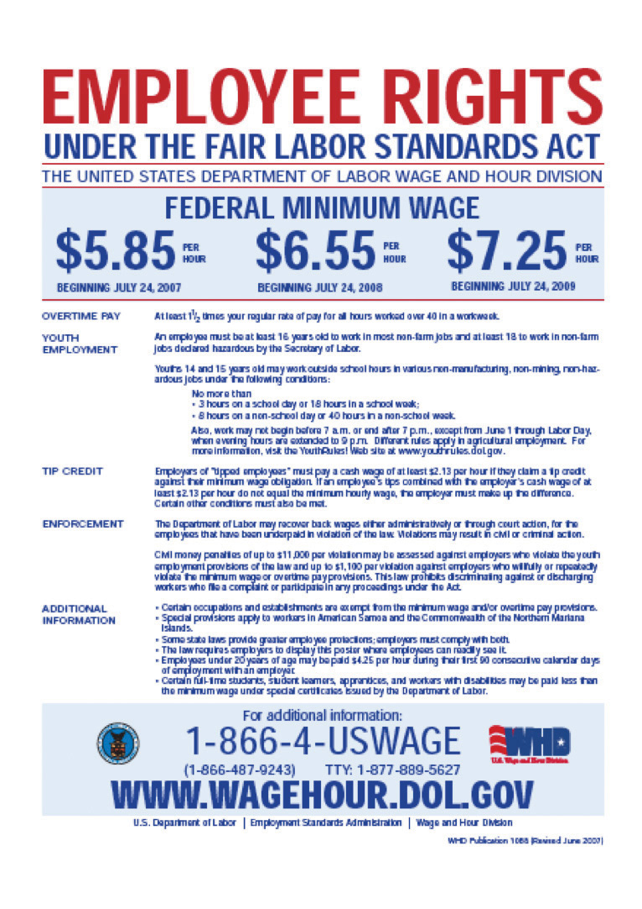

Even in rich economies like those of the United States or Western Europe, there are numerous jobs where the level of pay is very low. Perhaps you have experienced this yourself—for example, waiting tables, bagging groceries, or working at a fast-food restaurant. Strikingly, many of these jobs pay exactly the same hourly wage. In 2010 in the United States, for example, the wage for jobs in fast-food restaurants was often $7.25. If you worked for Burger King in Georgia or Arby’s in Iowa, you were likely to receive exactly the same wage. In Washington State, you would have earned more—$8.67 an hour—but you would have again found that many different employers were offering exactly the same wage. Had you looked for a job in a fast-food restaurant in 1995 in the United States, you would probably have been offered $4.25. The story is similar in many other countries. In New Zealand, the wage at fast-food restaurants in 2010 was typically NZ$12.75 (about $9.50); in France it was €9.00 (about $12.50).
The fact that different US employers from Wisconsin to Pennsylvania offer the same hourly wage is not a coincidence. It is the result of legislation by the federal government that sets a lower limit on the wage that firms can pay. Such regulations are called minimum wage laws, and they are found in many different countries. Figure 11.1 "US Department of Labor Poster" is a poster you might have seen where you have worked. This is from the US Department of Labor and outlines your rights as an employee. This chapter is about the origins and consequences of the government intervention summarized in this poster.
Figure 11.1 US Department of Labor Poster
Governments enact such laws because they want to ensure that those who work earn a “living wage.” Were you to work in the United States at the current federal minimum wage for 40 hours a week, 50 weeks a year (a total of 2,000 hours), you would earn $14,500. This is slightly above the current poverty level for an individual (which is $11,369) but is well below the average income in the United States. Without minimum wage legislation, the wage earner in a family could have a full-time job, work hard every day, and still not be able to keep the family out of poverty.
Minimum wage laws have been in existence in some parts of the world for a long time. The Industrial Conciliation and Arbitration Act of New Zealand set a minimum wage more than a century ago, in 1894. The first minimum wage in the United States was established in Massachusetts in 1912. Working conditions at that time were terrible in comparison to those in modern developed economies. Women, men, and children worked long hours in very dangerous working conditions for extremely low pay. It was quite natural, confronted with these sweatshops, to feel that the government could do more to actively protect the rights of workers and secure a fair standard of living for them. Those of us fortunate to live in rich economies are now largely spared from such working conditions, but in much of the world, people continue to work in unsafe and unhealthy conditions for very low pay.
The US federal government first established a minimum wage in 1938, as part of the Fair Labor Standards Act. Not all workers were covered by this act, however. The US Constitution charges the federal government with the duty of regulating interstate trade, so the act originally covered only those workers who were involved with trade that crossed state lines. Over time, however, amendments to the legislation have increased its coverage, and it now applies to all workers.See the following discussion for more details: US Department of Labor, Wage and Hour Division (WHD), “Fact Sheet #14: Coverage Under the Fair Labor Standards Act (FLSA),” revised July 2009, accessed March 14, 2011, http://www.dol.gov/whd/regs/compliance/whdfs14.htm.
Prior to the Fair Labor Standards Act, many states instituted their own minimum wage laws, and minimum wages still differ from state to state. For example, Oregon’s current minimum wage is $8.50, about 17 percent higher than the federal minimum. These state-by-state differences complicate the life of economic historians who wish to study minimum wages. But for the economic analyst, these differences are extremely valuable because they are like an experiment: we can compare the experiences of different states with different laws.
In the United States, the minimum wage was raised in 2007, 2008, and 2009. Prior to that, the minimum wage had been constant for a decade; it had last been raised in 1997 following an act of Congress passed in 1995. President Clinton’s 1995 message to the Congress, accompanying his minimum wage proposal, laid out arguments for the minimum wage increase. The following quote is from the Congressional Record:
To the Congress of the United States:
I am pleased to transmit for your immediate consideration and enactment the ‘Working Wage Increase Act of 1995.’ This draft bill would amend the Fair Labor Standards Act to increase the minimum wage in two 45 cents steps—from the current rate of $4.25 an hour to $4.70 an hour on July 4, 1995, and to $5.15 an hour after July 3, 1996.
…
To reform the Nation’s welfare system, we should make work pay, and this legislation would help achieve that result. It would offer a raise to families that are working hard, but struggling to make ends meet. Most individuals earning the minimum wage are adults, and the average worker affected by this proposal brings home half of the family’s earnings. Numerous empirical studies indicate that an increase in the minimum wage of the magnitude proposed would not have a significant impact on employment. The legislation would ensure that those who work hard and play by the rules can live with the dignity they have earned.
I urge the Congress to take prompt and favorable action on this legislation.Congressional Record, February 13, 1995 (House), page H1677-H1678, accessed March 3, 2011, http://frwebgate2.access.gpo.gov/cgi-bin/TEXTgate.cgi?WAISdocID=C6M4yE/0/1/0&WAISaction=retrieve.
President Clinton’s words were forceful, and legislators in many different countries have been convinced by arguments such as these. Yet despite their widespread existence, minimum wage laws are highly contentious. Some commentators and analysts think that minimum wage laws are badly misguided and do much more harm than good.
The superficial appeal of minimum wage legislation is clear: it allows us to know that people who hold down jobs will at least earn a basic living wage—hard work will be rewarded by a minimum standard of living. Sometimes this is expressed differently: those who work hard should receive a “fair” wage for their efforts. (Fair is in quotation marks because not everyone agrees on what is fair and what is unfair, so it is hard to define exactly what the word means here.)Chapter 13 "Superstars" contains more discussion. In other words, minimum wage legislation has a redistributive goal: the aim is to put more of society’s resources in the hands of the working poor.
Economics, however, teaches us that many policy actions can have unintended consequences. To assess whether it is a good idea for the government to intervene in this manner, we need to develop a framework for understanding the effects of minimum wage laws. In particular, we want to answer the following questions:
We will not tell you whether or not the minimum wage is a good thing. By the end of this chapter, you should be in a position to make your own informed opinion about this controversial public policy question.
Because the minimum wage says that firms are not allowed to pay below a certain price for the labor they hire, it is natural that our analysis focuses on the labor market. Of course, there is no single labor market—rather, we might think about there being many different markets for different types of skilled individuals. Lawyers, plumbers, engineers, web designers, and airline pilots earn much more than the minimum wage. In this chapter, though, we are focusing on people who earn relatively low wages, which means that we should look at the unskilled labor market. Sellers of labor in this market are not bringing any specialized skills; buyers of labor are not looking for any particular qualifications. The unskilled labor market is largely a market for time.
The minimum wage is set in terms of money—dollars in the United States, euros in France, and so on. Over time, increases in prices can erode the value of the minimum wage. We therefore begin this chapter by explaining how to adjust for the effects of higher prices. We then turn to the unskilled labor market. We look at what happens when we impose a minimum wage in that market, and then we look at what happens when the minimum wage changes.
Who is affected by minimum wage changes? Recognizing that people move in and out of jobs, we go beyond a supply-and-demand framework and consider these dynamic changes in the labor market. When we take into account these movements, we obtain a more sophisticated answer to this question. Then, once we are done with theory, we turn to evidence. We look at what different studies have found about the effects of changes in the real wage, and we assess how well these studies match up with our theory.